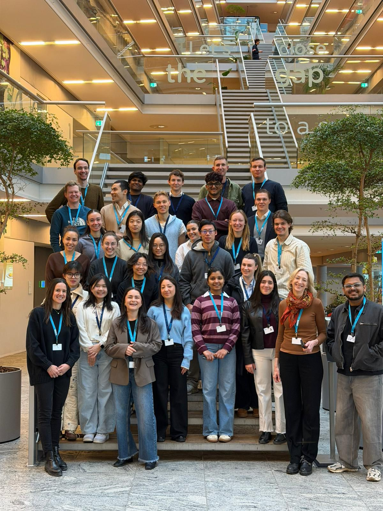

Workflow Mapping
Map interactions from procurement to delivery and identify where coordination slows down.
Denmark / Ramboll
AI Opportunities in Engineering Workflows
A strategic exploration of how AI can improve coordination across engineering, procurement, quality, and delivery workflows in a complex AEC environment.
View Project ↓
Teams faced coordination delays across procurement, quality control, and project delivery. While many promising AI ideas existed, they were often isolated within teams or tools, making it difficult to create compound value or drive meaningful adoption at scale.
Map interactions from procurement to delivery and identify where coordination slows down.
Synthesize cross-functional needs, operational pain points, and decision bottlenecks.
Identify high-value use cases, integration opportunities, and system-level recommendations.
We explored neuro-symbolic and agentic AI integration, developed a value-based evaluation framework, and highlighted the importance of avoiding fragmented tools. Most importantly, we emphasized keeping human judgment in the loop to ensure responsible, practical, and trustworthy adoption.
Connect procurement, engineering, quality, and delivery through shared AI systems.
Assess AI opportunities based on measurable business and user value.
Avoid isolated tools and pursue integrated, scalable platform approaches.
Design AI to augment human expertise, not replace it.